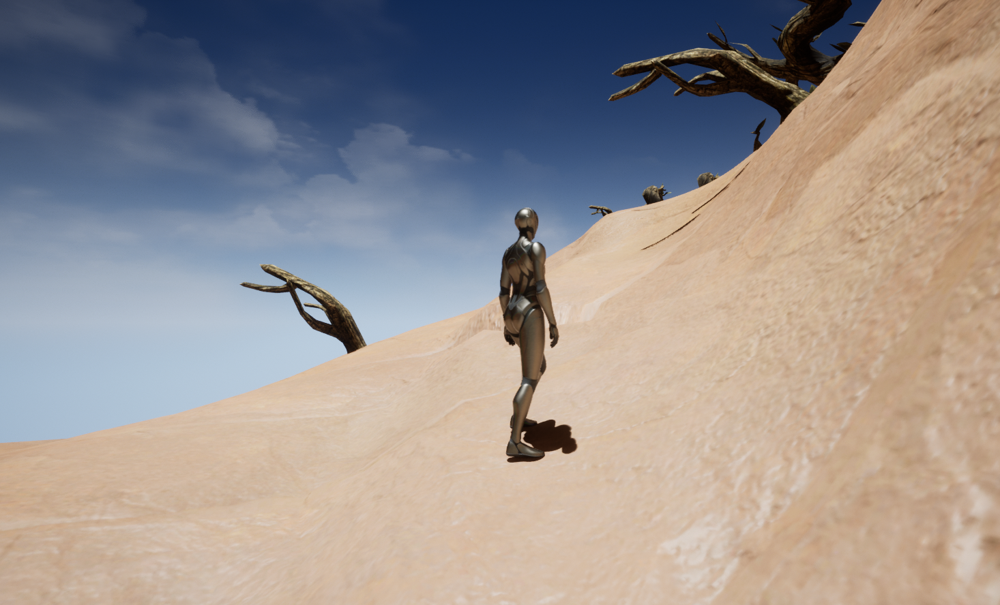

Exercice 2 : Le trésor des vagabonds
Point de départ
Progression à flanc de montagne 
Vues sur l'obstacle
Vue juste après l'obstacle
Eaux à flanc de montagne
Vue sur le temple
Vue à l'interieur du temple détruit
Temple vu d'en haut
Vue d'ensemble